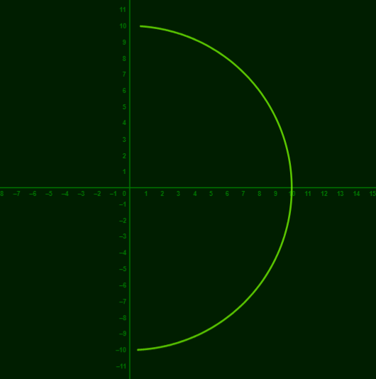
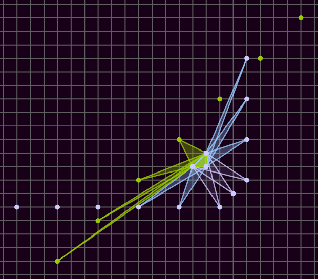
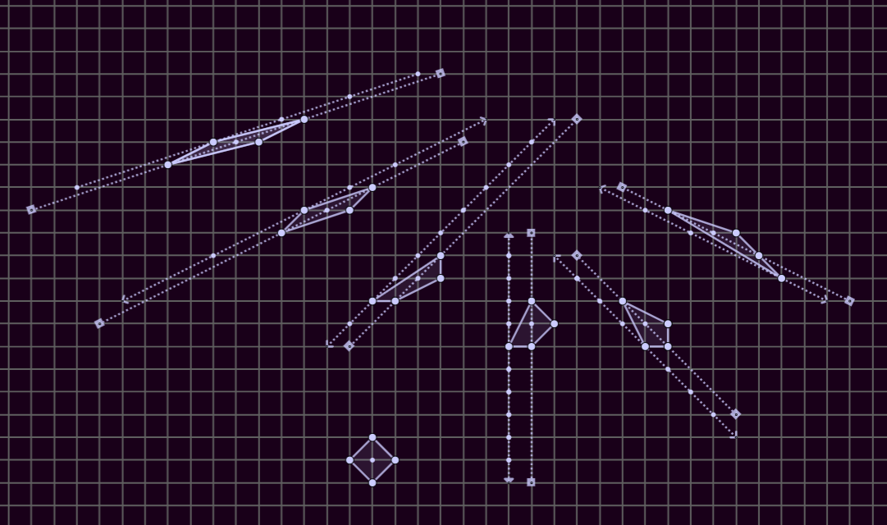
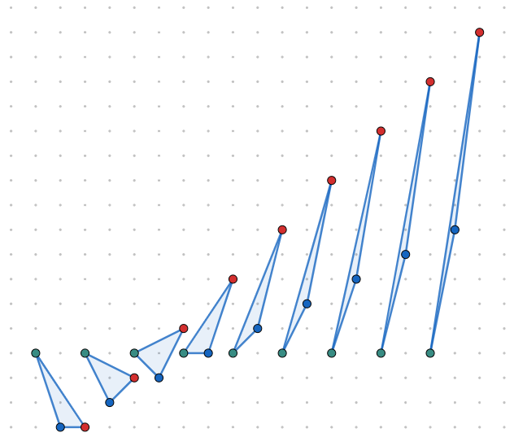

Coordinate system that locates a point by the slope of the line that would intersect it and the origin (m), and its distance from the origin (d). This is not much different from polar, just slope instead of angle. Function will be d as a function of m.

Note the small space between what would be the y axis and the graph. The only place an md graph can touch this vertical axis is at zero. It can get arbitrarily close, of course, but this graph's domain was -20 < m < 15
Where Figure 2 was maybe trivial but still instructive, the graph of d = m is less obvious. The next few figure will illustrate what happens when we show classic x,y graphs on this m,d graph paper.
Keeping it simple, d = m - 7. This is obviously a very cool graph, and I conjecture that it would make a good Formula 1 curve. The dotted line tracks with the value of m.
This graph shows how more and more information is displayed as m -> infinity. It also shows the solutions where d < 0 appear to the left of the m = infinity axis (I'd rather not call it the y-axis).
Multiplied the argument by 5 to fit more spring activity between -1 and 1, where fully half of the graph gets drawn in md.
Lots of different polynomials look pretty cool, I chose this cubic. Note it passes through the origin three times, at the appropriate slope value.

Undoing the transformation carefully yields some familiar looking graphs, starting with one that looks like y = 3. Important note: it never touches the 'y' axis, so it differs from y = 3 in that respect.

The same idea of having a classic x,y graph appear on the m,d plane.

At this point just trying to make cool looking pictures.

description goes here